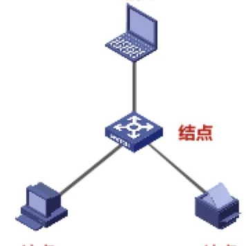
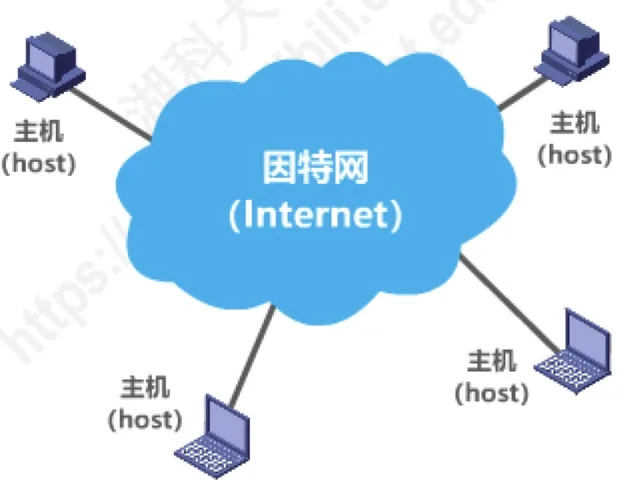
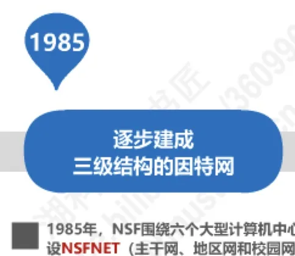
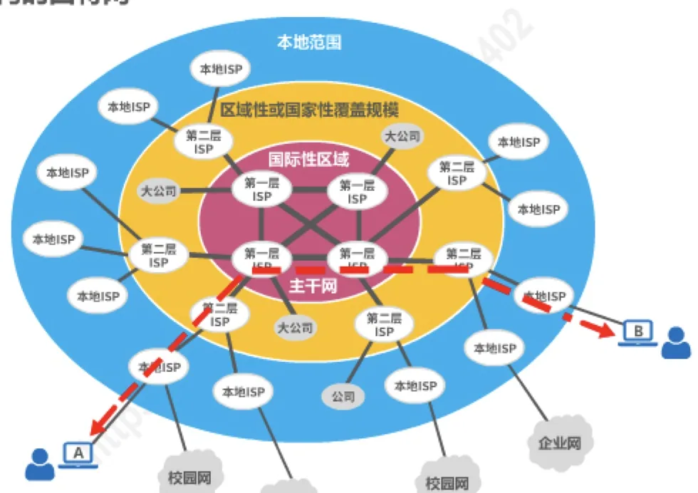

计算机通信与网络 · 第 1 章 概述
1.2 因特网概述
本节是整门课的起点。我们要研究的对象是计算机网络，而当今规模最大、最有代表性的计算机网络就是因特网。先分清「网络—互联网—因特网」三个层层递进的概念，再看因特网走过的三个阶段、它如何制定标准、由谁运营、整体上由什么组成，为后面各章搭好舞台。
1. 网络、互联网与因特网
先从最小的概念说起。网络（Network）由若干结点（Node）和连接这些结点的链路（Link）组成。结点可以是计算机、集线器、交换机、路由器等联网设备，链路则是有线或无线的传输介质。

多个网络还可以通过路由器互连起来，构成一个覆盖范围更大的网络，这就是互联网（互连网，internet）。因此，互联网是「网络的网络（Network of Networks）」。
而因特网（Internet）是世界上最大的互连网络：用户数以亿计，互连的网络数以百万计，全球的主机（host）都连接其上。

请注意 internet 与 Internet 的区别，这是一对容易混淆的写法：
- internet（小写 i）是通用名词，泛指由多个计算机网络互连而成的网络，在这些网络之间使用的通信协议可以是任意的；
- Internet（大写 I）是专用名词，指当前全球最大的、开放的、由众多网络相互连接而成的特定计算机网络。它采用 TCP/IP 协议族作为通信规则，其前身是美国的 ARPANET。
2. 因特网发展的三个阶段
因特网不是一天建成的。沿着时间线，它的发展可以分为三个阶段，每个阶段的「主角」都不一样：

第一阶段：从单个网络 ARPANET 向互联网发展（1969 年起）。
- 1969 年，第一个分组交换网 ARPANET 诞生；
- 70 年代中期，人们开始研究多种网络之间的互连；
- 1983 年，TCP/IP 协议成为 ARPANET 的标准协议——通常把这一年视为因特网的诞生时间；
- 1990 年，ARPANET 任务完成，正式关闭。
第二阶段：逐步建成三级结构的因特网（1985 年起）。
- 1985 年，美国国家科学基金会 NSF 围绕六个大型计算机中心建设 NSFNET，形成主干网、地区网和校园网的三级结构；
- 1991 年，美国政府将因特网主干网交给私人公司经营，并开始对接入因特网的单位收费。
第三阶段：逐步形成多层次 ISP 结构的因特网（1993 年起）。
- 1993 年，NSFNET 逐渐被若干个商用因特网主干网替代：政府机构不再负责因特网运营，改由各种因特网服务提供者 ISP 来运营；
- 1994 年，万维网 WWW 技术促使因特网迅猛发展；
- 1995 年，NSFNET 停止运作，因特网彻底商业化。
3. 因特网服务提供者 ISP
普通用户并不「直接接入」因特网，而是通过因特网服务提供者 ISP（Internet Service Provider）接入。ISP 拥有通信线路、路由器等联网设备，向用户提供接入服务。我国常见的 ISP 有中国电信、中国联通、中国移动等。
商业化之后的因特网是在分层的 ISP 架构上运转的（图 4）：
- 第一层 ISP：即主干网，覆盖国际性区域，彼此互联，服务对象主要是第二层 ISP 和大公司；
- 第二层 ISP：区域性或国家性覆盖规模，向第一层 ISP 购买服务，同时向本地 ISP 提供服务；
- 本地 ISP：覆盖本地范围，直接面向校园网、企业网和个人用户。

一个国家接入因特网的「通道」有多宽，可以粗略地由国际出口带宽来衡量。下表是 CNNIC 第 43 次《中国互联网络发展状况统计报告》（2019 年 2 月）给出的我国主要网络国际出口带宽数：
| 网络 | 国际出口带宽数（Mbps） |
|---|---|
| 中国电信 | 4,537,680 |
| 中国联通 | 2,234,738 |
| 中国移动 | 1,997,000 |
| 中国科技网 | 115,712 |
| 中国教育和科研计算机网 | 61,440 |
| 合计 | 8,946,570 |
4. 因特网的标准化工作
因特网能从一个研究性网络成长为全球基础设施，与它开放的标准制定方式密不可分。因特网在制定标准上的一个很大特点是面向公众：
- 所有 RFC（Request For Comments，征求意见文档）技术文档都可以从因特网上免费下载（www.ietf.org/rfc.html）；
- 任何人都可以随时用电子邮件对某个文档发表意见或建议。
因特网的标准制定由一套分工明确的组织承担：
- 因特网协会 ISOC（Internet Society）：国际性组织，负责对因特网进行全面管理，并在世界范围内促进其发展和使用；
- 因特网体系结构委员会 IAB（Internet Architecture Board）：负责管理因特网有关协议的开发；
- 因特网工程部 IETF（Internet Engineering Task Force）：负责研究中短期工程问题，主要针对协议的开发和标准化；
- 因特网研究部 IRTF（Internet Research Task Force）：从事理论方面的研究，开发一些需要长期考虑的问题。
制订因特网正式标准，要经过以下 4 个阶段：
- （1）因特网草案（在这个阶段还不是 RFC 文档）；
- （2）建议标准（从这个阶段开始成为 RFC 文档）；
- （3）草案标准；
- （4）因特网标准。
顺带一提：2011 年发布的 RFC 6410 已将「草案标准」阶段取消，现在的标准过程精简为「建议标准 → 因特网标准」两步。不少教材（包括本讲义）仍沿用四阶段的表述，了解其演变即可。
5. 因特网的组成
从工作方式上看，因特网可以划分为两大块（图 5）：
- 边缘部分：由所有连接在因特网上的主机（又称端系统）组成。这部分是用户直接使用的，用来进行通信（传送数据、音频或视频）和资源共享；
- 核心部分：由大量网络和连接这些网络的路由器组成。这部分是为边缘部分提供服务的，提供连通性和交换。
后续章节正是沿着这两块展开的：核心部分的网络如何传送数据，就从下一节的三种交换方式讲起；边缘部分两种通信方式——客户—服务器方式和对等方式，将在 6.2 节专门讨论。
本节小结
- 三个递进的概念：网络（结点＋链路）→ 互联网（网络的网络）→ 因特网（全球最大的互连网络，采用 TCP/IP 协议族）；internet 是通用名词，Internet 是专用名词；
- 发展三阶段：单个网络 ARPANET（1983 年 TCP/IP 成为标准协议，因特网诞生）→ 三级结构 NSFNET → 多层次 ISP 结构（1995 年彻底商业化）；
- 现代因特网由分层 ISP 支撑：第一层（主干网）→ 第二层（区域）→ 本地 ISP（面向用户）；
- 标准化面向公众：RFC 免费公开、任何人可提意见；组织上 ISOC — IAB — IETF / IRTF 分工；正式标准经历因特网草案 → 建议标准 →（草案标准）→ 因特网标准；
- 组成上分两块：边缘部分（端系统，通信与资源共享）＋ 核心部分（网络与路由器，提供连通性和交换）。